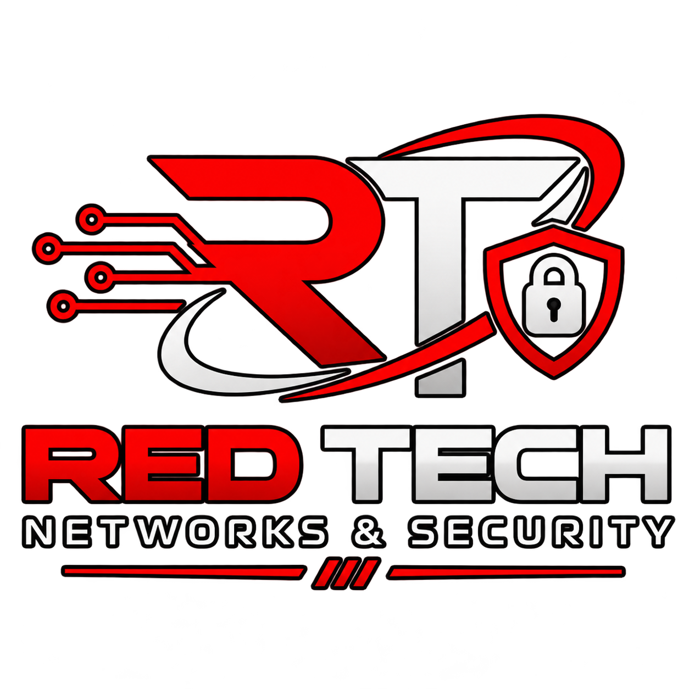

Mantenimiento correctivo y soporte técnico
Diagnóstico, reparación, configuración y solución de problemas de equipos de cómputo y sistemas.
SOLICITAR SOPORTE ↗Soluciones tecnológicas para personas y empresas: soporte técnico, desarrollo de software, recuperación de información e infraestructura de redes con enfoque en seguridad y continuidad.

Un solo aliado para resolver problemas, desarrollar tus ideas y mantener tu infraestructura funcionando de forma confiable.
Diagnóstico, reparación, configuración y solución de problemas de equipos de cómputo y sistemas.
SOLICITAR SOPORTE ↗Páginas web modernas, aplicaciones y soluciones digitales adaptadas a las necesidades de tu negocio.
COTIZAR PROYECTO ↗Evaluación y recuperación de archivos ante borrados accidentales, fallas lógicas y otros incidentes.
CONSULTAR CASO ↗Análisis de riesgos, revisión de vulnerabilidades, recomendaciones de protección y buenas prácticas.
PROTEGER MI NEGOCIO ↗Instalación y configuración de routers, switches, puntos de acceso y conectividad LAN/Wi-Fi.
MEJORAR MI RED ↗Soluciones de videovigilancia, tendido y organización de cableado para una infraestructura ordenada.
COTIZAR INSTALACIÓN ↗Te ayudamos a resolver incidencias, fortalecer tus sistemas y construir una infraestructura tecnológica preparada para crecer.
En Red Tech Networks & Security reunimos soporte, desarrollo e infraestructura para ayudarte a aprovechar la tecnología con mayor confianza. Trabajamos con un enfoque práctico: entender tu necesidad, proponer una solución adecuada y acompañarte durante su implementación.
Ya sea que necesites reparar un equipo, lanzar una página web, recuperar archivos o instalar una red y cámaras de seguridad, podemos ayudarte a definir el siguiente paso.
Cuéntanos qué necesitas ↗Un proceso transparente para que sepas qué sigue en cada etapa.
Revisamos el problema, tus objetivos y el entorno técnico.
Planteamos alternativas, tiempos estimados y cotización.
Ejecutamos el servicio acordado y validamos su funcionamiento.
Te explicamos el resultado y las recomendaciones de uso.
Cuéntanos qué necesitas y solicita una cotización. Podemos ayudarte a elegir el servicio adecuado para tu equipo, negocio o proyecto.
Enviar correo ↗